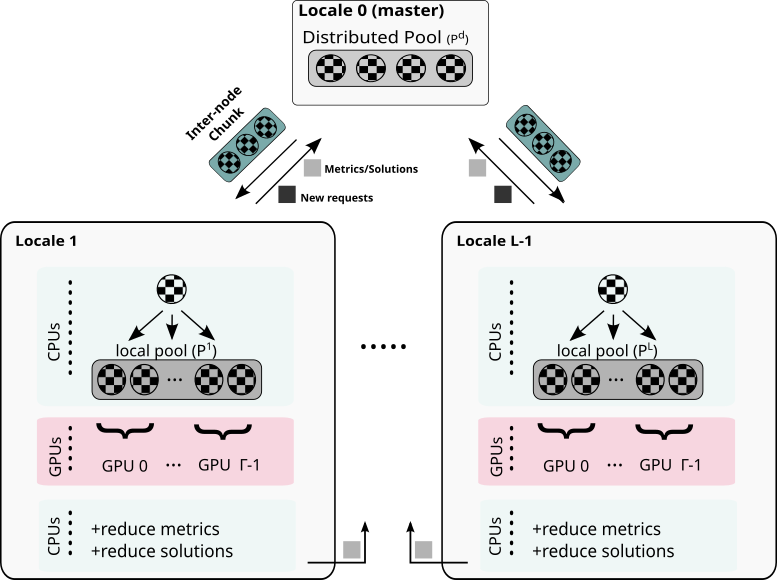

This installment of our 7 Questions for Chapel Users series represents our first tag-team interview, in which we talk with not one but two Chapel users. Tiago Carneiro and Guillaume Helbecque are the principal developers of ChOp—the Chapel-based Optimization Project—which focuses on solving combinatorial branch-and-bound computations. Read on to learn more about their work and experiences with Chapel!
1. Who are you?
Tiago: My name is Tiago Carneiro, and I specialize in High-Performance Computing (HPC), having gained experience at research institutions such as INRIA, Huawei, and Imec. In late 2018, I initiated a research project with Professor Nouredine Melab at INRIA-Lille, France, which eventually grew into the Chapel-based Optimization Project (ChOp).
Guillaume: My name is Guillaume Helbecque, and I am currently a postdoctoral researcher in France, working within the INRIA BONUS research team (Big Optimization aNd Ultra-Scale Computing). I hold an academic background in applied mathematics and high-performance computing, and I recently completed my Ph.D. at the University of Lille, under the partial supervision of Professor Nouredine Melab.
2. What do you do? What problems are you trying to solve?
Tiago: Since the late 2000s, I’ve been dedicated to researching parallel computing for solving combinatorial optimization problems. Initially, my work focused on peer-to-peer networks, primarily utilizing Java and the JXTA protocol.
Later, during my undergraduate years, as CUDA-capable GPUs became more accessible in Brazil, I shifted my research. I began exploring the application of GPUs to exact optimization methods like Backtracking and Branch-and-Bound, adapting traditional optimization algorithms for these new architectures.
“These problems lie at the heart of many industrial and decision-making processes, with direct applications in areas such as logistics, production, scheduling, and network design.
”
More recently, my research addressed the challenge of finding a trade-off between performance and productivity in distributed heterogeneous combinatorial search. This also involved tackling critical issues of heterogeneity, portability, and scalability within such systems—the very foundation of the Chapel-based Optimization Project (ChOp) that I mentioned.
In my most recent position, I was part of a multidisciplinary group designing hardware for HPC and AI. My team specialized in the software aspects of this project, and among other things, I contributed to the development of a PGAS-like library that worked with C/C++, D, and Python.
Guillaume: My research focuses on the exact optimization of large-scale combinatorial problems using Branch-and-Bound (B&B) methods. These problems lie at the heart of many industrial and decision-making processes, with direct applications in areas such as logistics, production, scheduling, and network design.
B&B algorithms rely on the implicit enumeration of the solution space by exploring large, irregular, and dynamically generated search trees. This often leads to the generation of massive amounts of data, requiring substantial computational and memory resources. Consequently, solving such problems efficiently calls for the use of massively parallel systems. However, modern supercomputers are becoming increasingly large, diverse, and heterogeneous (e.g., CPU-GPU architectures), and are also more prone to faults—raising numerous scientific challenges related to scalability, heterogeneity, portability, fault tolerance, and software productivity.
While most of the existing literature adheres to the traditional MPI+X model for parallel implementation, my research explores alternative approaches based on different programming models, such as PGAS (Partitioned Global Address Space). These models aim to unify the multiple levels of parallelism (intra-node, inter-node, and GPU), to provide a higher level of abstraction to the developer, and also to favor portability.
This simplification, however, comes with its own set of challenges, as practical limitations or performance differences may arise. My work therefore investigates these trade-offs between performance and software productivity, with the broader goal of contributing to the discussion on future directions for exascale computing.
3. How does Chapel help you with these problems?
Tiago: In exact optimization, the historical focus has almost always been on maximizing performance, often at the expense of developer productivity. Traditionally, parallelizing these problems means:
-
Designing complex, often problem-specific, scalable data structures.
-
Relying heavily on low-level languages like C/C++ for their fine-grained control.
-
For parallelism within a single node, you’re mixing threading libraries like OpenMP or Pthreads with CUDA or other GPU libraries.
-
For distributed programming, you’re typically using MPI to handle the complex load balancing scheme, which is usually a challenging and very long part of the code.
This traditional approach requires a significant amount of effort dedicated to managing the low-level complexities of parallelism and load balancing/distribution.
“Chapel truly stands out because it effectively unifies the different parallel levels of modern GPU-powered clusters, handling everything from inter-node communication to intra-node parallelism across both CPUs and GPUs.
”
A primary benefit in my research comes from features like the
DistributedIters module. These modules abstract away and manage many
of the traditionally complex components that we’d have to code
manually, such as:
- The subproblems pool management
- The load balancing scheme for the search
- Termination criteria
- And the reduction of results across different processes
In short, Chapel truly stands out because it effectively unifies the different parallel levels of modern GPU-powered clusters, handling everything from inter-node communication to intra-node parallelism across both CPUs and GPUs—with GPU portability. This significantly frees us from implementing the most complex and error-prone aspects of a distributed combinatorial search, allowing us to focus more on the optimization problem itself, rather than the intricate details of inter-process communication.
Guillaume: I agree with what Tiago said, but want to add my personal experience as well. From my side, I would say that the main Chapel features that have supported my work are the high-level unification of various levels of parallelism (intra-node, inter-node, and GPU), its portability, as well as the vendor-neutral design of its GPU support. Other aspects—though not specific to the language itself—include its object-oriented design and its interoperability with other languages such as C. Its high-level nature and Python-like syntax also make Chapel particularly quick and enjoyable to learn and use.
4. What initially drew you to Chapel?
Tiago: Back in 2018, my supervisor, Professor Melab, gave me a task: to research programming languages for the ‘Exascale-era’ and identify candidates for parallel and distributed combinatorial search. We didn’t have the exact terminology then, but the goal was to explore languages from projects like HPCS and figure out how they could benefit exact optimization.
After looking into several options, UPC and Chapel were the top ones. But it was Chapel’s distributed iterators built on top of PGAS that really caught my eye—they seemed to perfectly fit our specific needs. Chapel also stood out as the only language with a truly active community and direct support from its development team.
“I got a single-node Chapel version as fast as C+OpenMP, and developed a first distributed application that was competitive with MPI+OpenMP in terms of performance, but with significantly fewer lines of code.
”
Initially, after I presented Chapel’s features to the group, some members were a bit skeptical. However, after I implemented some proofs of concept, I was able to demonstrate Chapel’s potential: I got a single-node Chapel version as fast as C+OpenMP, and developed a first distributed application that was competitive with MPI+OpenMP in terms of performance, but with significantly fewer lines of code.
Guillaume: I started working with Chapel at the beginning of my Ph.D. in 2021 when I joined the research project initiated by Tiago Carneiro and Nouredine Melab. The opportunity to work with a promising high-level PGAS-based language designed specifically for exascale computing—offering an alternative to traditional MPI+X approaches—immediately appealed to me.
5. What are your biggest successes that Chapel has helped achieve?
Tiago: Here are the key achievements that come to mind:
First, we achieved unified parallel programming across an entire large-scale GPU cluster. This means we can program all levels of parallelism—CPU cores, GPUs, and inter-node communication—all with a single language. This dramatically simplifies development by letting us avoid the complex mix of different programming languages and libraries typically needed for each parallel level. For instance, we no longer had to manually program intricate MPI-based load balancing schemes (see the figure below as well as this paper). This significantly higher productivity in combinatorial search was achieved with minor parallel performance losses.
Another success came with Chapel’s native GPU support. Before its official support, our code was quite complex and difficult to maintain because we had to mix Chapel with CUDA C via an interoperability layer. That meant maintaining separate kernel versions for each GPU library, plus their C wrappers, and the Chapel calls. By switching to Chapel’s native GPU capabilities, we achieved a significant improvement: our distributed application code became 65% shorter, making it much cleaner and easier to manage.
Finally, we demonstrated that it’s possible to achieve both code portability and performance portability in distributed combinatorial search using Chapel’s native GPU support. We compared our Chapel-only distributed GPU search vs. its hybrid counterparts that mixed Chapel with CUDA (for NVIDIA) and HIP (for AMD). The Chapel-only version consistently achieved similar parallel performance to its hybrid rivals and showed similar strong scaling on up to 1024 GPUs, which really validated its capability across diverse hardware vendors (see this paper for details).
To give an idea of how the project has evolved, in 2020 we were using a few dozen GPUs, mixing CUDA+Chapel, and solving smaller instances—up to Queens21. Today, with a Chapel-only code, we can solve an instance around 80x bigger (e.g., Queens23) in less than an hour using more than 1000 GPUs.

The distributed search is a master-worker application that starts serially, generating a pool (Pd) of subproblems. However, all the communication aspects rely on Chapel’s distributed iterators, e.g., load distribution, metrics, and reduction and termination criteria. We focus on the enumerative aspects of the search.
“Chapel stands in sharp contrast to the C+MPI+OpenMP+CUDA approaches commonly found in the literature, which typically involve a significantly higher cost in terms of learning curve, implementation effort, debugging complexity, and long-term maintenance.
”
Guillaume: As Tiago pointed out, one of the major achievements of our research is the successful implementation of massively parallel and heterogeneous B&B algorithms using a single programming language. This stands in sharp contrast to the C+MPI+OpenMP+CUDA approaches commonly found in the literature, which typically involve a significantly higher cost in terms of learning curve, implementation effort, debugging complexity, and long-term maintenance.
Another particularly satisfying outcome is the successful deployment of our Chapel-based codes across a wide range of platforms—from a simple laptop to (pre-)exascale supercomputers featured in the TOP500 list (e.g., Frontier and LUMI)—including both NVIDIA and AMD GPU architectures. Remarkably, this has been achieved with minimal effort dedicated to portability. We have already scaled our applications to more than 51,200 CPU cores and 1,024 GPU accelerators, leading to many outcomes in terms of solving hard problem instances, validating our approach at scale, and demonstrating the viability of PGAS-based designs on state-of-the-art heterogeneous platforms. For example, we confirmed the optimality of some very hard flowshop scheduling problem instances in under two hours using CPUs only, which required the exploration of approximately tree nodes. This is particularly notable, as such a result would have been inconceivable just a few years ago without relying on hundreds of GPU accelerators.
6. If you could improve Chapel with a finger snap, what would you do?
Tiago: This question immediately brings to mind a very specific situation I often face in my work with irregular applications and benchmarking.
If I could improve one thing with a finger snap, it would be to enhance Chapel’s iterators by allowing for runtime selection of iterator types via an environment variable.
I constantly need to test different combinations of Static, Dynamic,
and Guided iterators to find the optimal load balancing strategy. This
means my code gets quite repetitive, with separate segments for each
type. If, similar to OpenMP’s OMP_SCHEDULE "guided,4", I could just
set an environment variable to switch between these strategies at
runtime, my code would be significantly shorter and my development
process much more efficient.
Beyond that, something I’ve personally been wishing for since 2018 is a distributed work-stealing iterator. Honestly, maybe that’s even something I could have tried to program myself. =)
Guillaume: One point that often comes up in this interview series—and that I personally agree with—is that Chapel’s compilation times are noticeably slower than those of its counterparts, such as C or C++. However, I’m aware that the development team has already made significant efforts to improve this and continues to work actively on it, and I’m grateful for their ongoing commitment.
7. Anything else you’d like people to know?
Tiago: I believe a key reason for the ChOp research’s success was the strong support the Chapel team provides to its users.
In 2018, it was technically difficult to use the language on the infrastructure I had access to, and some features we needed were sometimes experimental or not officially supported. Without this close support, our research might have taken a different path or faced significant delays.
Guillaume: I completely agree with that, and I would even add that the many efforts dedicated to the Chapel ecosystem (such as ChapelCon, formerly CHIUW) are highly beneficial to the users. A concluding message for readers would be “Try Chapel yourself!”.
Thanks very much to Tiago and Guillaume for taking part in this interview series and for being our first joint participants! If you’d like to learn more about ChOp and their work, check out their talks from ChapelCon ‘24:
-
Investigating Portability for Tree-based Optimization on GPU-powered Clusters by Tiago
-
Unbalanced Tree-Search at Scale Using Chapel’s DistributedBag Module by Guillaume
or use Ctrl-F/Cmd-F on the Chapel website’s Papers page to search for their names and find publications they’ve authored.
If you have other questions for Tiago and Guillaume, or comments on this series, please direct them to the 7 Questions for Chapel Users thread on Discourse. And if you’re a Chapel user and would like to participate in this series or write some other article for this blog, it’s now easier than ever, as we have recently made the repository that powers the blog open-source on GitHub!